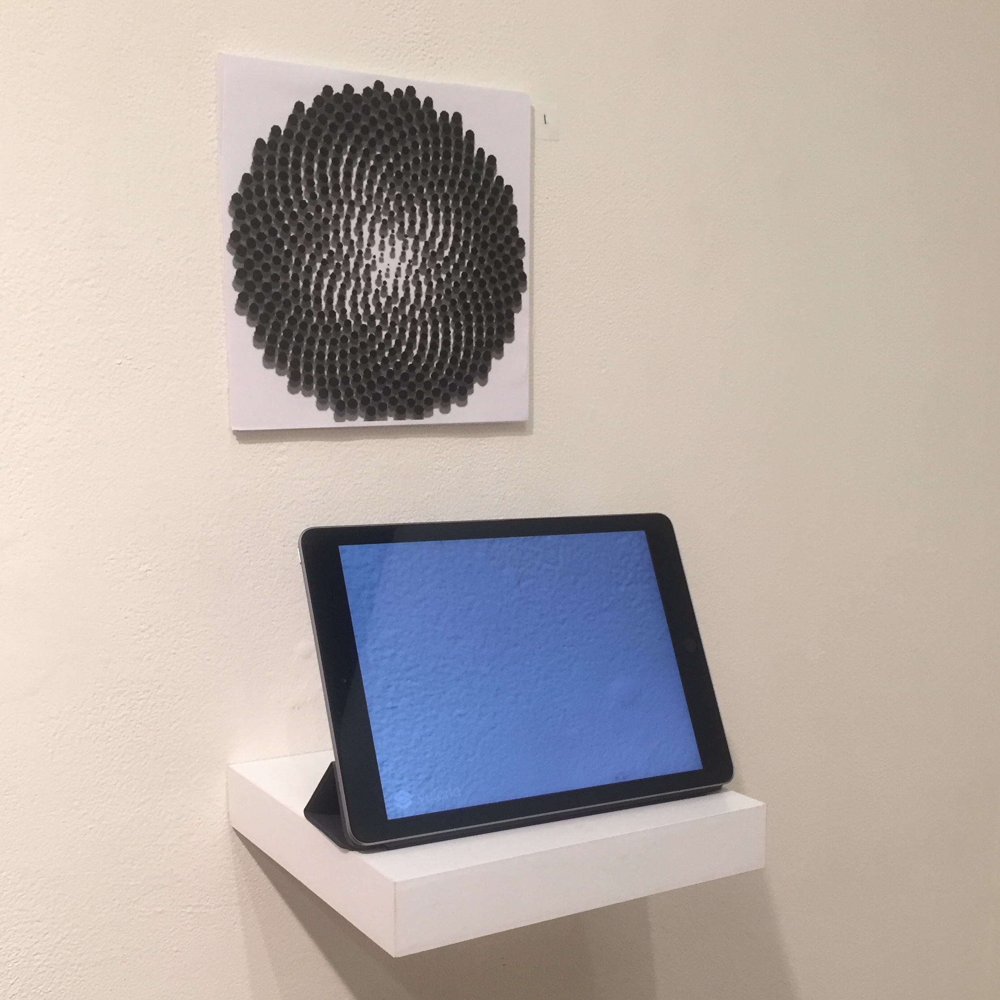

Augmented reality is the usage of a phone or any type of smart device to view the world with some degree of difference. In my piece Idle Time, a butterfly sits on a leaf sitting and waiting for something interesting to come. You can use your finger to touch and move the butterfly, it can also be scaled by pinching it and releasing. If you scale but the butterfly too much it cannot return to its previous state on the leaf. This parallels my mind when I am thinking about something. I might be quietly thinking about a lesson but my mind wonders thinking of the potential of project application to figuring out what I need to do next for a class. My mind flutters all over the place and cannot get back to its original spot or even forgets where I was even to begin with. No one can know what’s on your mind expect yourself and it would be interesting if someone could see when the others people’s minds go flying off to explore new things. There were not many challenges with this project, I was familiar with the workflow and the process. I had an issue getting the butterfly to properly animate the way I wanted to, I used maya and unity for this project. I would like to remake this project and be able to see it through another time.
This piece was displayed in the San Jose State University's Gallery in 2019.
Demonstration of interactive elements.